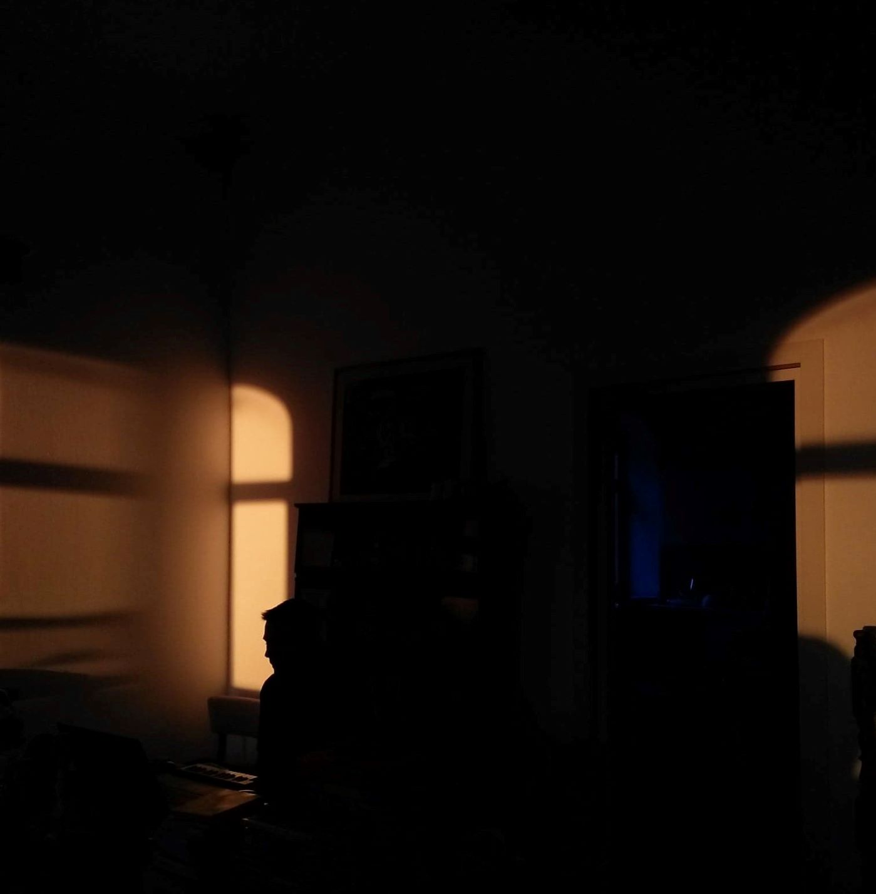

Other articles
Oralia Zuniga
ILLUSTRAION & GRAPHIC DESIGN

Today I wanted to talk about Oralia Zuniga, an illustrator and graphic designer based in Mexico. Her illustrations on instagram particularly caught my attention because they make me think of a sort of mosaic. Each illustration is usually composed of a main illustration...

Sampler man
ILLUSTRATION

In one of the releases of Advanced Creation magazine, I read an interview about a French artist that goes by the name of “Sampler Man” and discovered his crazy universe. Originally studying in applied art school, he started making his own fanzine, being very inspired by what was done in France at that time....
Welcome into the archives: Fela Kuti
MUSIC
Berlin 1979. The man in the middle of the stage is Fela Kuti. Singer, saxophonist, bandmast or politician, he has done it all and has revolutionised the world of music. He is known to have played an important role in the creation of Afrobeat and was very influential in the Nigerian political scene during that time...

Иван Смекалин (Ivan Smekalin)
PHOTOGRAPHY & MUSIC

A few weeks ago in my instagram feed, I really started noticing the pictures of Ivan Smekalin. At this point all I know about this guy is that he’s Russian and that he makes beautiful photos. The pictures that particularly stood out to me were from a black and white series, with very strong contrast, ...
Olympic nightingale: an interview
MUSIC
Talking a lot about music and making music with my dad, also known as Olympic Nightingale, I realized how interesting it could be to share his perspective as an underground independent self-taught artist. After having written an article about him ...


Leo Walk et La Marche Bleue
DANCE

Leo walk is a French dancer and artist, and I have been following his work since I discovered him in his interview for Clique. He started dancing when he was just a kid, initially with breakdance, but his style has evolved a lot since then. Incorporating elements of different styles of dance, ...